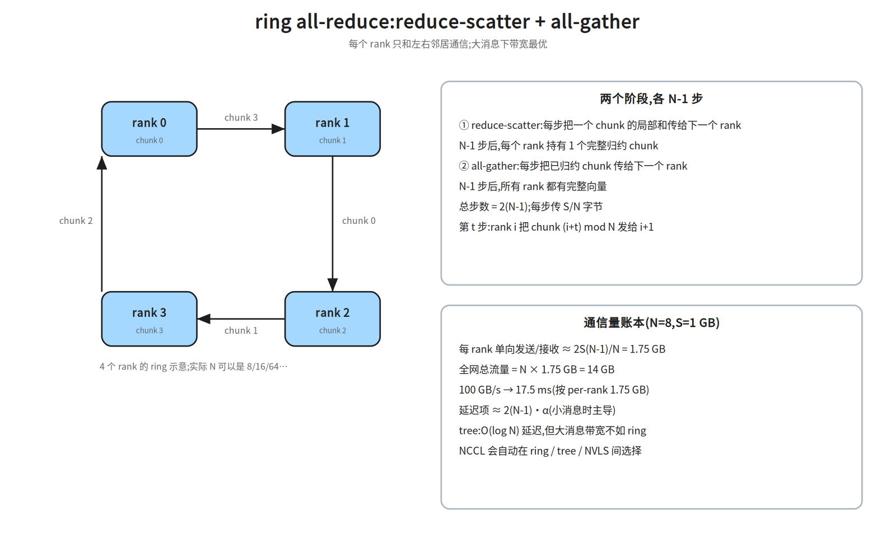
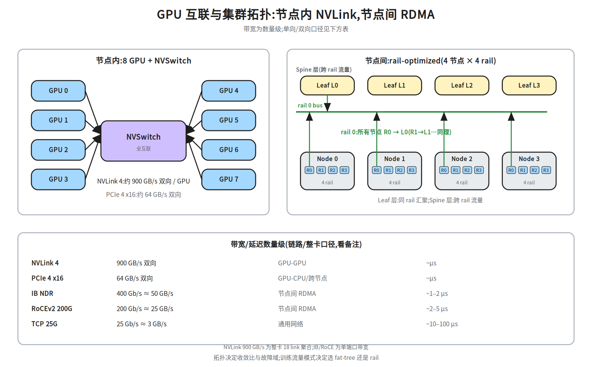
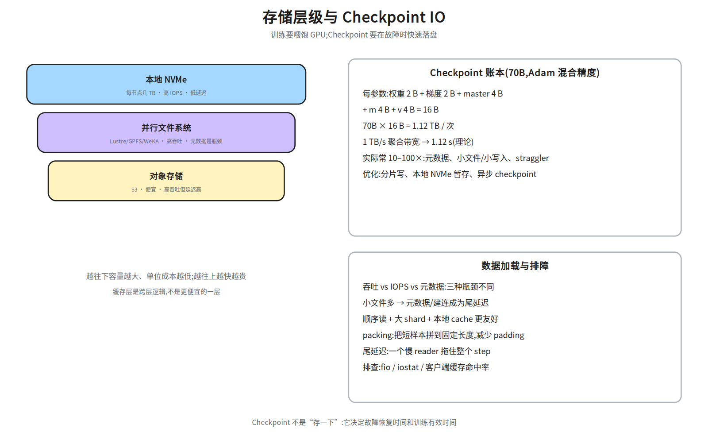
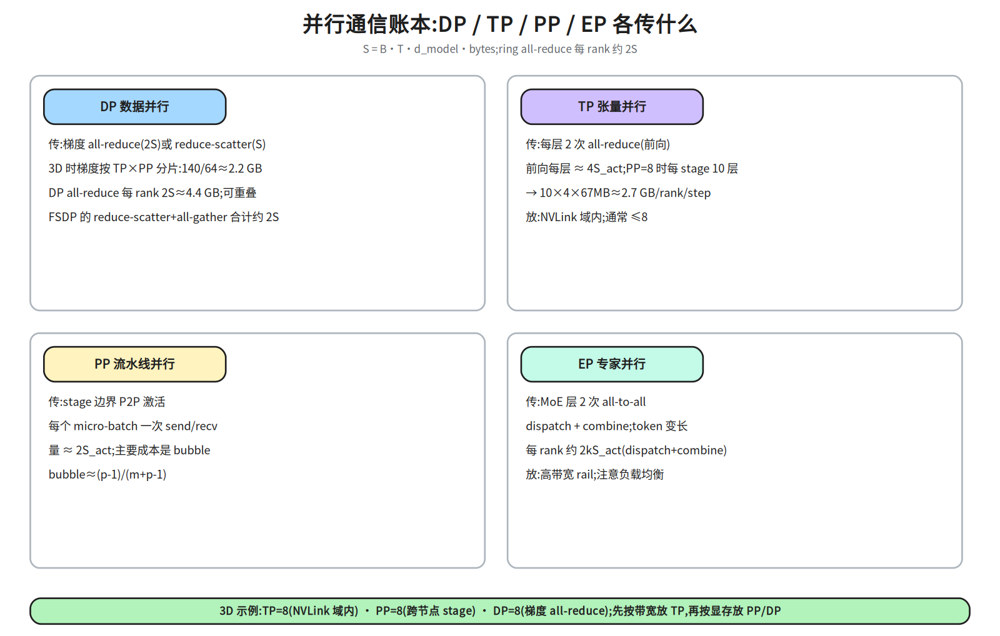
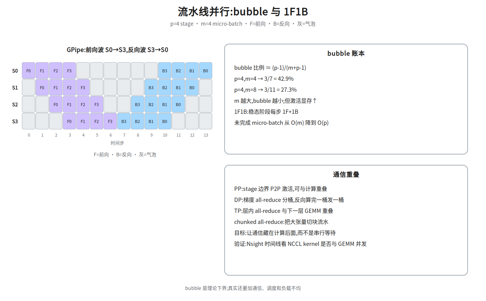
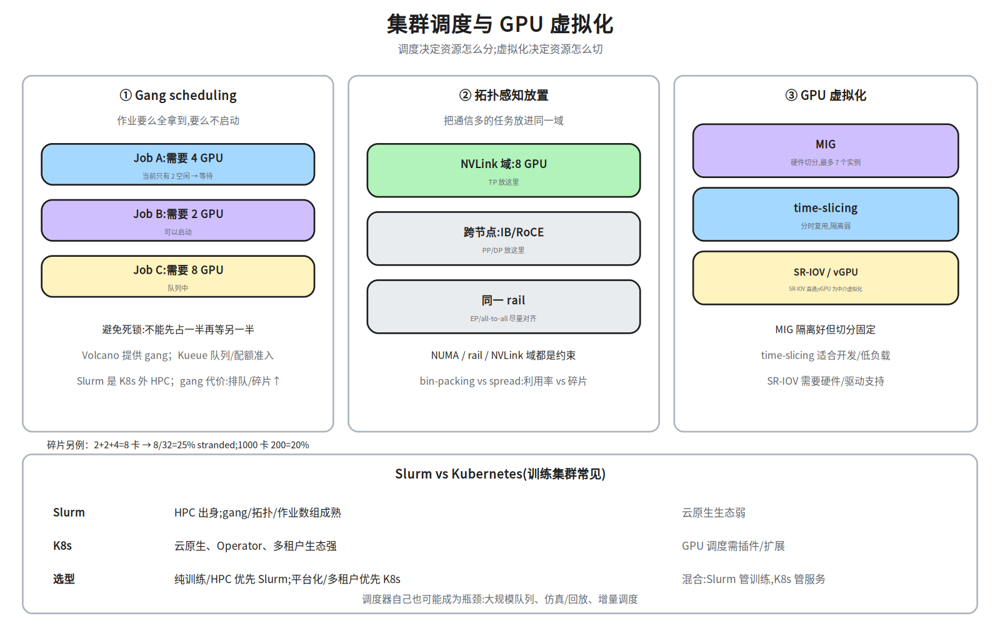

M2-4 · 分布式底座¶
本层回答：多张 GPU、多台机器，如何连成一台“可编程的训练机”？ 通信、网络、存储、调度、可靠性各自解决什么问题？为什么训练系统的瓶颈经常不在 GPU 里？
前置（按节）： - §2–§4：
notes/21_single_node_ops.md §2–§4（GPU 访存层次 / Roofline）——只需要知道“搬数据很贵”。 - §5：无硬前置；会看ls/fio即可。 - §6：notes/20_ai_infra_map.md §8–§9（7 层与深度标尺）；TP/PP/DP/EP 会在 §6 就地定义。 - §7–§8：notes/21_single_node_ops.md §9（Profiling 思路）可选。建议路径（每次 45 分钟）： ① §2–§4（集合通信 / 互联 / 拓扑）；② §5–§6（存储 / 并行通信账本）； ③ §7（调度与虚拟化）；④ §8（可靠性 / 排障）。
深度标注：§2–§4、§6–§7 为必学；§5、§8 为必学（至少会算账/会分层排查）； RDMA 调优、拓扑设计、容量模型为加分；可编程交换、在网计算为了解。
0. 依赖图（学习顺序）¶
graph TD
A["单机 GPU / 访存 / Roofline<br/>(M2-1)"] --> B["集合通信<br/>all-reduce / all-gather / all-to-all"]
B --> C["互联与拓扑<br/>NVLink / IB / RoCE / rail"]
C --> D["并行通信账本<br/>DP / TP / PP / EP"]
D --> E["存储与 Checkpoint<br/>吞吐 / IOPS / 元数据"]
E --> F["调度与虚拟化<br/>K8s / gang / MIG"]
F --> G["可靠性<br/>ECC / XID / NCCL hang"]
G --> H["支撑 M2-2 训练系统<br/>与 M2-3 推理部署"]根节点是“单机搬数据很贵”；每往上一层，问题从“一张卡”变成“一个域/一个集群”。 汇点是：能判断一个分布式任务卡在通信、存储、调度还是硬件，并给出可验证的下一步。
术语速查（后文第一次出现时也会解释）：
| 术语 | 一句话 |
|---|---|
| rank | 一个参与通信的进程/GPU 编号；N 个 rank 组成通信组 |
| chunk | 把一个大向量切成的等长分片；ring 算法按 chunk 传 |
S |
每个 rank 上的数据量（字节）；注意“每 rank”还是“全网” |
| NVLink 域 | 通过 NVLink/NVSwitch 全互联的一组 GPU；域内带宽远高于跨节点 |
| rail | 节点上一组网卡/端口的编号；同一 rail 通常接同一台 leaf 交换机 |
| leaf / spine | 两层交换机的下/上层；leaf 接节点，spine 连 leaf |
| bisection | 把集群对半切，两半之间的可用带宽；全 bisection = 无收敛 |
| 收敛比 | 下行带宽 ÷ 上行带宽；越大越容易拥塞 |
| PFC / ECN | 无损以太网的流控 / 拥塞标记机制 |
| GPUDirect | 网卡/存储直接读写 GPU 显存，绕过 CPU 拷贝 |
| MIG | 把一张 GPU 硬件切成多个隔离实例 |
| SR-IOV | 网卡/GPU 的硬件虚拟化直通 |
| XID | NVIDIA 驱动报的硬件/驱动错误码 |
| straggler | 拖慢整个同步 step 的慢节点/慢 reader |
| bin-packing | 把任务尽量塞进已有节点，减少碎片 |
1. 为什么需要分布式底座¶
单卡放不下 70B 模型：FP16 权重 140 GB，而单卡 80 GB。即使放得下，训练也要把 梯度、优化器状态和激活同时放进显存。于是必须把模型/数据/流水线切开，切开的代价就是通信。
分布式底座回答四个问题：
| 问题 | 本层内容 |
|---|---|
| 卡之间怎么传数据？ | 集合通信、NVLink/PCIe、IB/RoCE、RDMA |
| 怎么切模型、切完要传多少？ | DP/TP/PP/EP 的通信账本 |
| 数据与 Checkpoint 放哪？ | 本地 NVMe、并行文件系统、对象存储、缓存 |
| 任务怎么分到卡上、坏了怎么办？ | K8s/Slurm、gang、拓扑感知、虚拟化、可靠性 |
一句话：M2-1 让一张卡跑得快；M2-4 让一万张卡像一台机器一样跑得稳、跑得便宜。
术语速查：
rank= 一个参与通信的进程/GPU（编号 0..N-1）；leaf/spine= 交换机层级；NVLink 域= 同一 NVSwitch 下、可高带宽直连的 GPU 集合；XID= NVIDIA 驱动的错误码；DCQCN= RoCE 的拥塞控制算法；bin-packing= 把任务塞进已有空隙以提高利用率。
2. 集合通信：多卡协作的动词¶
2.1 六个基本原语¶
| 原语 | 做什么 | 输入 → 输出 | 典型用途 |
|---|---|---|---|
| Broadcast | 一个 rank 的数据发给所有 rank | root 的 S → 所有 rank 的 S |
广播参数/配置 |
| Scatter | root 把不同分片发给不同 rank | root 的 N×S/N → 各 rank S/N |
分发数据 |
| Gather | 各 rank 的分片收给 root | 各 rank S/N → root N×S/N |
收集结果 |
| Reduce | 各 rank 的数据按 op 归约到 root | 各 rank S → root S |
汇总指标 |
| AllReduce | 所有 rank 归约，结果给所有 rank | 各 rank S → 所有 rank S |
梯度同步 |
| AllGather | 各 rank 的分片拼给所有 rank | 各 rank S/N → 所有 rank S |
收集分片参数 |
| ReduceScatter | 归约后按分片散给各 rank | 各 rank S → 各 rank S/N |
ZeRO/FSDP |
| AllToAll | 每个 rank 给每个 rank 发不同分片 | 各 rank N×S/N → 各 rank N×S/N |
MoE 路由、转置 |
S是每个 rank 上的数据量（字节）；N是 rank 数。表中“输入/输出”是每个 rank 的视角。
一句话记法：AllReduce = ReduceScatter + AllGather。这也是 ring all-reduce 的两阶段。
2.2 ring all-reduce：两阶段、通信量¶

把 N 个 rank 排成环，把向量切成 N 个 chunk：
- reduce-scatter（
N-1步）：每个 rank 把自己的一个 chunk 与邻居的局部和合并后传给下一个； 走完N-1步，每个 rank 持有一个完整归约好的 chunk。 - all-gather（
N-1步）：每个 rank 把自己负责的 chunk 沿环传一圈； 走完N-1步，所有 rank 都有完整向量。
通信量账本（S = 每 rank 向量字节数）：
例：N=8、S=1 GB → 每 rank 单向发送/接收 2×1×7/8 = 1.75 GB，全网 14 GB；
100 GB/s 下约 17.5 ms，300 GB/s 下约 5.8 ms。
大消息看带宽，小消息看延迟：ring 的带宽最优，但有
2(N-1)步的延迟； tree 的延迟是O(log N)，但大消息的带宽不如 ring。NCCL 会按拓扑和消息大小自动选。
2.3 其他原语的量级¶
| 原语 | 每 rank 通信量（近似） | 说明 |
|---|---|---|
| Broadcast | S |
root 发一圈/树 |
| Reduce | S |
收到 root |
| AllGather | S(N-1)/N |
每 rank 发自己的 S/N 给其他 N-1 个 |
| ReduceScatter | S(N-1)/N |
归约后只保留自己那份 |
| AllToAll | S(N-1)/N |
每 rank 给其他每个 rank 发 S/N，共 N-1 份 |
这些是“每 rank 发送量”的口径；全网总流量再乘
N。面试先说口径，否则数字会差N倍。
2.4 ring vs tree¶
| ring | tree | |
|---|---|---|
| 延迟 | O(N) 步 |
O(log N) 步 |
| 大消息带宽 | 最优（每 rank 约 2S） |
较差（上层链路成为瓶颈） |
| 适用 | 大梯度/大张量 | 小消息、延迟敏感 |
| NCCL | Ring | Tree / 双二叉树 |
NCCL 的默认策略不是“永远 ring”：它会根据拓扑、消息大小、通道数选择 Ring / Tree / CollNet / NVLS。调优时不要盲目
NCCL_ALGO=Ring，先看拓扑和消息大小。
2.5 NCCL 常用旋钮¶
| 变量 | 作用 |
|---|---|
NCCL_DEBUG=INFO |
打印拓扑、算法、通道、错误 |
NCCL_DEBUG_SUBSYS=INIT,NET |
只看初始化/网络 |
NCCL_ALGO=Ring/Tree |
强制算法（排障用，不要长期写死） |
NCCL_PROTO=LL/LL128/Simple |
协议；小消息 LL、大消息 Simple |
NCCL_IB_HCA |
指定 RDMA 网卡 |
NCCL_SOCKET_IFNAME |
指定 TCP 控制面网卡 |
NCCL_P2P_LEVEL |
P2P 走 NVLink/PCIe 的层级 |
NCCL_NET_GDR_LEVEL |
GPUDirect RDMA 的层级 |
排障顺序：
NCCL_DEBUG=INFO看它选了哪条路径 →ibstat/ibv_devinfo看网卡 →nvidia-smi topo -m看 GPU 拓扑 →nccl-tests复现。
2.6 分层 all-reduce：NVLink 域内 + 跨节点¶
真实集群不是一张平 ring，而是两级：
- 节点内（NVLink 域）：先做 reduce-scatter，把每个 GPU 负责的 chunk 归约好；
- 跨节点（IB/RoCE）：每个节点把对应 chunk 发给其他节点，做一次 all-reduce；
- 节点内 all-gather：把跨节点结果拼回每个 GPU。
这样跨节点只传“每节点一份”的 chunk，而不是每个 GPU 都发一遍；这也是 NCCL 拓扑检测的价值。若跨节点链路是瓶颈，可以调小跨节点消息、增大节点内 chunk； NVLS/CollNet 则把归约放到交换机/网卡里做（了解即可）。
面试画 AllReduce 路径时，要画出“节点内 NVLink + 节点间 IB”两层，而不是一条 ring 画到底； 瓶颈通常在 leaf/spine 上行、rail 不均衡和跨 rail 流量。
3. 互联与拓扑：数据走哪条路¶
3.1 节点内：NVLink / NVSwitch / PCIe¶

| 链路 | 带宽（数量级） | 用途 |
|---|---|---|
| NVLink 3（A100） | 600 GB/s 双向 / GPU | 8 卡节点内全互联 |
| NVLink 4（H100） | 900 GB/s 双向 / GPU | NVSwitch 全互联 |
| PCIe 4 x16 | 64 GB/s 双向 | GPU–CPU、跨节点 |
| PCIe 5 x16 | 128 GB/s 双向 | 新一代 CPU/网卡 |
双向口径：厂商标称的 900 GB/s 是整卡 18 条 link 的双向合计（约 450 GB/s 单向）。 IB/RoCE 的 400/200 Gb/s 则是单端口带宽。算“传一个梯度要多久”时，要用单向有效带宽， 再乘上协议效率（通常 80–90%）；不要拿整卡 NVLink 去和单口 IB 直接比。
3.2 节点间：IB / RoCE / RDMA¶
| 网络 | 带宽 | 延迟 | 特点 |
|---|---|---|---|
| InfiniBand NDR | 400 Gb/s ≈ 50 GB/s | ~1–2 µs | 专用网络、无损、生态成熟 |
| InfiniBand HDR | 200 Gb/s ≈ 25 GB/s | ~1–2 µs | 上一代 |
| RoCEv2 200G | 200 Gb/s ≈ 25 GB/s | ~2–5 µs | 以太网承载 RDMA，依赖 PFC/ECN |
| TCP 25G | 25 Gb/s ≈ 3 GB/s | ~10–100 µs | 通用、便宜、延迟高 |
RDMA（Remote Direct Memory Access）：网卡直接读写远端内存，绕过 CPU 和内核协议栈； GPUDirect RDMA 让网卡直接读写 GPU 显存，省掉一次 GPU→CPU 拷贝； GPUDirect Storage 让 NVMe 直接读写 GPU 显存，Checkpoint/数据加载更快。
面试常问“RDMA vs TCP”：RDMA 省的是CPU 拷贝和内核路径，带来低延迟、低 CPU 占用； 代价是需要无损网络（PFC/ECN）、配置复杂、故障域更敏感。
3.3 拓扑：fat-tree / rail-optimized / 收敛比¶
- fat-tree：leaf–spine 多层，任意两节点间有多条等价路径；全 bisection 时任意一半节点 能同时与另一半通信。代价是交换机和光模块数量。
- rail-optimized：每个节点有
R个网卡（rail），第r个网卡固定接第r个 leaf； 同一 rail 跨节点通信只经过一层 leaf，适合 all-to-all/专家并行。 - 收敛比（oversubscription）：下行带宽 ÷ 上行带宽。
1:1全无收敛最贵；3:1、4:1常见。收敛比越大，跨 spine 的流量越容易拥塞。 - 超节点：NVLink/NVSwitch 把更多 GPU 放进一个高带宽域（如 8/16/32 卡）， 让 TP/EP 的通信留在域内。
例：收敛比
3:1表示下行 300 Gb/s 只配 100 Gb/s 上行；跨 spine 的流量一旦超过 1/3， 就会在 leaf 上行拥塞。所以“非阻塞/全 bisection”很贵，通常只给关键 rail 或关键租户。选型直觉：TP 要低延迟、高带宽 → 放 NVLink 域；PP/DP 可跨节点；EP 的 all-to-all 要对齐 rail。拓扑不是“画得好看”，它直接决定集合通信走几条链路、会不会拥塞。
万卡拓扑算例：1024 卡 = 128 节点 × 8 卡，每节点 8 个 400 Gb/s 网卡（8 rail）。
- 全 bisection：每节点 8 条上行 =
128×8=1024条 400G 链路；leaf 层需要能同时承载 这 1024 条链路，spine 层再按收敛比配置。 1:1收敛：spine 侧带宽 = leaf 侧带宽，最贵；3:1收敛：上行只需 1/3 带宽， 跨 spine 流量会排队，适合 PP/DP 为主、EP 不跨 rail 的负载。- rail-optimized：每个节点的第
r张网卡接第r台 leaf；同一 rail 的 all-to-all 只过一层 leaf，跨 rail 才走 spine。EP 的 token 路由要尽量让同一专家组的流量落在同一 rail。
3.4 RoCE 的稳定性：PFC / ECN / 拥塞¶
RoCEv2 把 RDMA 跑在以太网上，需要“无损”语义：
- PFC（Priority Flow Control）：按优先级暂停上游流量，防止丢包；配置不当会PFC 风暴， 一台交换机暂停扩散到全网。
- ECN（Explicit Congestion Notification）：交换机标记拥塞，端侧 DCQCN 降速； 比 PFC 更“软”，但需要端网协同。
- 排查：
ethtool -S看 pause/丢包，perfquery/mlxlink看链路误码，ibstat/ibv_devinfo看端口状态；先确认“是丢包、拥塞还是链路误码”。
现象：训练周期性变慢、NCCL 超时、某个 rail 的带宽只有一半。 先看交换机端口计数和 PFC 事件，不要一上来就换网卡。
4. 集合通信之外的通信：P2P 与重叠¶
- P2P（point-to-point）：
send/recv，PP 的 stage 边界、PD 分离的 KV 传输都用它。 - 通信/计算重叠：反向传播算完一桶梯度就发一桶 all-reduce（bucket）； PP 的激活传输与下一层计算重叠；TP 的 all-reduce 与下一层 GEMM 重叠。
- 压缩/低精度：FP8/INT8 梯度、稀疏通信、Top-k 压缩；代价是精度和实现复杂度。
- 异步：异步 all-reduce 可能引入 stale gradient，训练稳定性要评估。
重叠的目标不是“通信消失”，而是把通信藏到计算后面。验证方法：Nsight 时间线里 NCCL kernel 是否与 GEMM 并发；如果 NCCL 前后有大段空隙，说明没有重叠好。
5. 存储：数据与 Checkpoint 的底座¶

5.1 四层存储¶
| 层 | 特点 | 典型系统 |
|---|---|---|
| 本地 NVMe | 几 TB、高 IOPS、低延迟 | 节点本地盘 |
| 并行文件系统 | 高吞吐、POSIX、元数据是瓶颈 | Lustre、GPFS、WeKA |
| 对象存储 | 便宜、高吞吐、延迟高 | S3、OSS |
缓存层是跨层逻辑，不是“更便宜的一层”：Alluxio/JuiceFS 把热点数据放到计算节点附近， 命中时走本地/内存，未命中再回源对象存储。
吞吐 vs IOPS vs 元数据是三种不同的瓶颈： 大文件顺序读看吞吐；小文件随机读看 IOPS/元数据；海量小文件还会打爆目录服务。
副本 vs 纠删码（EC）：
| 3 副本 | 8+3 纠删码 | |
|---|---|---|
| 原始容量开销 | 3× | 1.375×（11/8） |
| 可容忍故障 | 2 份 | 3 个 shard |
| 写放大 | 3× | 8 数据 + 3 校验 |
| 重建 | 读 1 份 | 读 8 个 shard，CPU/网络开销大 |
| 适用 | 热数据、低延迟 | 冷数据、大容量、成本敏感 |
例：1 PB 可用容量，3 副本要 3 PB 原始盘；8+3 只要 1.375 PB。代价是重建更慢、 小文件/随机读更不友好。训练 Checkpoint 常用“副本/多路径 + 分片”，数据湖冷存用 EC。 Checkpoint 常见“热副本 + 冷 EC”：最近几个 Checkpoint 用副本保证快速恢复，旧的转 EC 省钱。
5.2 Checkpoint 账本¶
70B 模型、Adam 混合精度，每个参数大约：
1 TB/s 聚合带宽下理论 1.12 s，但真实常慢 10–100×：元数据、小文件/小写入、客户端缓存、
straggler、同步屏障。优化：
- 分片写：每个 rank 写自己的 shard，避免所有 rank 写一个文件；
- 本地 NVMe 暂存：先落本地，再异步上传；
- 异步 Checkpoint：训练继续，后台落盘；需要保证一致性/版本；
- 增量：只存变化的部分（实现复杂，慎用）。
Checkpoint 间隔与 RTO：设单次 Checkpoint 成本 C（秒），集群平均无故障时间 MTBF（秒），
Young-Daly 的近似最优间隔：
例：C=60 s、MTBF=24 h=86,400 s → τ≈sqrt(2×60×86400)≈3,220 s≈54 min。
间隔太短，Checkpoint 开销大；太长，故障后重算多。RTO = 故障检测 + 重新调度 + 加载 Checkpoint，
万卡集群要把“检测/调度”也算进去，不能只看盘上带宽。
万卡训练里，节点故障是常态：Checkpoint 要异步、分片、可并发读； 只写一个文件会被元数据和单客户端带宽卡死。
5.3 数据加载¶
- 顺序读 + 大 shard 对并行文件系统更友好；海量小文件会打爆元数据。
- 本地 cache：每个 epoch 预取到本地 NVMe；注意容量和失效。
- packing：把短样本拼到固定长度，减少 padding 和无效计算。
- 尾延迟：一个慢 reader 会拖住整个 step；用
fio/iostat/客户端指标定位。 checklist：shard 是否够大、prefetch 是否足够、本地 cache 命中率、是否有单文件热点、 reader 进程数是否匹配 CPU、是否被其他租户的 IO 抢占、网络重传/元数据延迟。 - P99 而不是平均：平均吞吐够，P99 慢 reader 仍会让同步 step 等；用预取、分片重试、 本地 cache、reader 隔离把尾延迟压下来。
Checkpoint 不是“存一下”：它决定故障恢复时间（RTO）和有效训练时间。 万卡训练里，Checkpoint 写失败/写慢是常见的长稳问题。
间隔与 RTO：太频繁 → 训练被写盘拖慢；太稀疏 → 故障后重算多。Young/Daly 近似给出 最优间隔
≈ sqrt(2 × T_ckpt × MTBF)。万卡集群还要考虑并发写、分片数、元数据服务； 异步 Checkpoint 能把写盘藏到训练后面，但要保证版本一致、回滚可用。
5.4 KV Cache 持久化¶
价值：多轮对话/Agent 的相同前缀、PD 分离的 KV 交接、请求抢占后的恢复，都可以复用 KV， 避免重复 prefill。挑战：KV 不是“小文件”，而是按请求/前缀组织的块。
- 账本：70B GQA-8、4K 上下文，每请求 KV ≈
1.25 GiB；1000 个并发就是1250 GiB ≈ 1.22 TiB。 - 分层：本地 NVMe（热）→ 并行 FS/对象存储（温/冷）；按前缀 hash 建索引。
- 一致性：KV 必须绑定模型版本 + tokenizer + RoPE 配置；模型一换，缓存全部失效。
- 安全：KV 可能包含用户上下文，多租户要隔离/加密/TTL。
- 传输：PD 分离/跨节点复用要走 RDMA；
1.25 GiB在 50 GB/s 下约 27 ms（见 M2-3 §7.2）。
不要把 KV 持久化当“免费缓存”：命中率低、索引/元数据、版本失效都会吃掉收益。
6. 并行通信账本：DP / TP / PP / EP¶

先定义：S_act = B × T × d_model × bytes（一个激活张量），S_grad = 参数字节。
| 并行 | 传什么 | 每 rank 通信量（近似） | 放哪 |
|---|---|---|---|
| DP | 梯度 all-reduce；FSDP 用 reduce-scatter + all-gather | all-reduce 2S_grad；reduce-scatter S_grad(FSDP 总 2S_grad) |
跨节点；可与反向重叠 |
| TP | 每层 2 次 all-reduce（前向） | 前向 4 S_act / 层；反向再加 4 S_act |
NVLink 域内，通常 ≤8 |
| PP | stage 边界 P2P 激活 | 2 S_act / micro-batch |
跨节点；成本主要是 bubble |
| EP | MoE 层 2 次 all-to-all | 每 rank 约 2·k·S_act（dispatch+combine） |
高带宽 rail；注意负载均衡 |
为什么 TP 放节点内：TP 每层都要 all-reduce，通信频繁且延迟敏感；跨节点会拖垮。 为什么 PP/DP 可跨节点：PP 只在 stage 边界传激活，DP 每个 step 只同步一次梯度， 通信/计算比更低。
一个 3D 例子：70B、TP=8、PP=8、DP=8、B=1、T=4096、d_model=8192、FP16：
S_act = 1 × 4096 × 8192 × 2 B ≈ 67 MB
TP:PP=8 时每个 stage 10 层;前向 10×4S ≈ 2.7 GB / rank / step
DP:梯度先按 TP×PP 分片 → 140/64 ≈ 2.2 GB;all-reduce 每 rank 2S ≈ 4.4 GB / step
PP:每个 micro-batch 传 67 MB 激活;主要成本是 bubble
关键：先分片，再 all-reduce。3D 下 DP 的
S_grad是“每 rank 分片后的梯度”， 不是完整 140 GB；TP 只计算本 stage 的 10 层，不是 80 层。面试时这两步最容易多乘。EP 口径：表里的
S_act是 每 rank 本层输入的激活量；k是 top-k。 若你手里是 EP 组内全局 token 数G，每 rank 的 all-to-all 量约2·G·k/E·d_model·bytes。两种写法只差“B 是全局还是每 rank”，面试时先声明口径， 否则会差E倍。这些是数量级，不是 benchmark。真实值还要乘协议效率、拓扑跳数、拥塞。 面试时先写公式，再代数字；不要只报一个“很快/很慢”。
6.1 3D 映射与流水线调度¶

- global batch = B_micro × m × DP：
m是 micro-batch 数（流水线切分），不是 batch 维。 - GPipe：每个 stage 先做完所有 micro-batch 的前向，再做所有反向；前向波
S0→S3， 反向波S3→S0。气泡比例(p-1)/(m+p-1)：p=4,m=4时3/7≈42.9%。 - 1F1B：稳态阶段每步一前一后，未完成 micro-batch 从
O(m)降到O(p)，省激活； bubble 比例不变。 - 重叠：PP 的 P2P 激活、DP 的分桶 all-reduce、TP 的层内 all-reduce 都要尽量与计算重叠。
- 选择：显存紧 → 小
m+ 重算/ZeRO；吞吐优先 → 大m（bubble 小）但激活涨。
7. 调度与虚拟化：资源怎么分、怎么切¶

7.1 K8s 的 GPU 抽象¶
- Device Plugin：把
nvidia.com/gpu这类资源暴露给 K8s； - GPU Operator：自动装驱动、容器运行时、DCGM exporter；
- MIG：把一张 GPU 切成多个硬件实例（A100 最多 7 个），隔离好、切分固定；
- time-slicing：多个容器分时复用一张 GPU，隔离弱，适合开发/低负载；
- SR-IOV / vGPU：SR-IOV 是硬件直通；vGPU 是中介虚拟化（hypervisor 调度），两者都依赖硬件/驱动。
7.2 gang scheduling¶
分布式训练要求“所有 worker 同时启动”，否则先启动的 worker 会空等甚至死锁。 gang scheduling 保证一个作业要么全拿到资源，要么不启动：
- K8s 的 gang 由 Volcano 等提供；Slurm 是另一套 HPC 调度器（K8s 外）；Kueue 主要做队列/配额/准入，不替代 gang 调度器，通常和 Volcano 组合；
- 代价：排队时间变长、碎片可能增加；
- 与优先级/抢占结合时，要避免低优先级作业被反复抢占。
7.3 拓扑感知与碎片治理¶
- 拓扑感知：把 TP 放进同一 NVLink 域，把 EP 对齐 rail，把 NUMA/网卡亲和性考虑进去。
- 碎片：大作业要 8 卡整机，但集群只剩零散 2 卡 → 利用率下降。 治理：整机预留、bin-packing、队列分级、可抢占的碎片作业。
- 碎片算例：1000 张卡、碎片率 20% ≈ 200 张卡无法组成整机；如果大作业都要 8 卡整机， 这部分卡就“看着空闲、实际不可用”。治理：整机预留、bin-packing、队列分级、允许小作业 填缝、坏节点及时 drain。
- 在离线混部：在线服务保 SLO，离线训练用剩余资源；需要资源隔离、优先级、 动态配额和快速驱逐。混部不是“把空闲卡塞满”：在线 P99 一抖，离线任务就要让路。
多租户与公平性：
- 配额：namespace/ResourceQuota 限制每租户的 GPU 数、并发任务数；
- fair share：按权重分配空闲资源，避免一个大租户饿死其他人；
- 隔离：MIG/time-slicing/SR-IOV；训练任务优先整卡，开发任务可共享；
- 优先级/抢占：高优任务可抢占低优任务；被抢占任务要能从 Checkpoint 恢复；
- 计量：按 GPU·小时/ token/存储计费，账单要能追溯到任务与租户；
- 准入：配额不足时排队或拒绝，不要让“先到先占”打乱公平性。
例：32 卡集群，租户 A 配额 16 卡、B 配额 16 卡；A 空闲时 B 可以借用，但 A 有任务时要能 在约定时间内收回（抢占/排队），这就是“弹性 + 公平”的取舍。
在离线混部算例：在线推理占 60% 卡、SLO TTFT P99<500 ms；离线训练用剩余 40% 卡，
但随时可能被抢占。做法：在线池预留 + 离线池 best-effort；离线任务每 10 分钟 Checkpoint，
被抢占后 2 分钟内 drain 并从 Checkpoint 恢复；监控在线 P99、离线有效训练时间、抢占次数。
如果离线流量把在线 P99 推高，就触发限流/降级，而不是继续塞任务。
7.4 Slurm vs K8s¶
| Slurm | K8s | |
|---|---|---|
| 出身 | HPC | 云原生 |
| 强项 | gang/拓扑/作业数组、超算生态 | Operator、多租户、服务编排 |
| 弱项 | 云原生生态弱 | GPU 调度需插件/扩展 |
| 选型 | 纯训练/HPC 优先 | 平台化/多租户/在线服务优先 |
7.5 调度器性能、仿真与碎片算例¶
- 调度延迟：队列里有 1 万个作业时，调度器要在一秒内做出决策；常见优化是增量调度、 只重算受影响节点、缓存拓扑/配额、批量绑定。
- 吞吐：调度次数/秒、Pod 绑定次数/秒、API server 压力；大规模集群里 etcd 和 kube-scheduler 都可能成为瓶颈。
- 仿真/回放：用真实 trace（作业到达时间、资源需求、运行时长）回放调度策略， 比较利用率、排队时间、碎片率；不要直接在线上 A/B。
- 碎片定义：stranded（搁浅）GPU = 空闲但无法满足任何排队作业资源形状的卡。
碎片率 = stranded GPU 数 / 总 GPU 数。
例：32 卡集群，空闲是
2+2+4三块，8 卡整机作业无法启动 → stranded = 8， 碎片率8/32=25%。若 1000 卡里 200 卡 stranded，就是 20% 碎片率。 治理：整机预留、bin-packing、队列分级、可抢占碎片作业。
面试问“调度器瓶颈在哪”：先分决策延迟、绑定吞吐、状态存储、碎片四层， 再给一个可观测指标（queue latency / scheduling throughput / fragmentation / utilization）。
队列算例：作业到达 100 个/s，调度器稳定能处理 120 个/s → 利用率 83%，队列不会无限增长；
若到达升到 150 个/s，积压速度 30 个/s，10 分钟就积压 1.8 万个作业。
用 Little's Law 估队列长度 L=λW：到达 100/s、平均排队 30 s → 约 3000 个等待作业。
指标：调度吞吐（jobs/s）、绑定吞吐（pods/s）、排队 P99、利用率、碎片率、抢占次数、任务成功率。 多租户/公平性见 §7.3；Slurm vs K8s 见 §7.4。
8. 可靠性：坏卡、坏链路、hang¶
8.1 常见硬件错误¶
| 现象 | 可能原因 | 检查 |
|---|---|---|
| ECC 错误 | HBM 位翻转 | nvidia-smi -q、DCGM |
| XID 79 | GPU 掉卡/PCIe 问题 | dmesg、nvidia-smi -q |
| XID 48/63/94/95 | ECC/显存/驱动错误 | DCGM、厂商文档 |
| NVLink 错误 | 链路误码/连接器 | nvidia-smi nvlink -e、dcgmi diag |
| PCIe AER | 链路错误 | dmesg、lspci -vv |
| 温度/功耗 | 散热/供电 | nvidia-smi -q -d TEMPERATURE,POWER |
XID 的具体含义随驱动/架构变化，面试时说“先查 XID 表和 dmesg，再决定 drain 还是重启”， 不要背一个绝对映射。
8.2 健康检查与自愈¶
- burn-in：新节点跑
dcgmi diag、nccl-tests、gpu-burn； - 巡检：定期 ECC/NVLink/PCIe 检查，发现坏节点
cordon/drain； - 自愈：坏节点自动隔离、任务重调度、Checkpoint 恢复；
- 冗余：热备节点、N+1 电源/网络、双 rail。
8.3 NCCL hang 排查¶
训练“卡住”不一定是 NCCL，但 NCCL hang 很常见：
- 看日志：
NCCL_DEBUG=INFO、NCCL_DEBUG_SUBSYS=INIT,NET；确认卡在哪个 collective； - 看是否异步错误：
CUDA_LAUNCH_BLOCKING=1复现，检查cudaGetLastError； - 看拓扑/网卡：
nvidia-smi topo -m、ibstat、ibv_devinfo、ping； - 看进程：
py-spy dump、gdb、strace，确认是等通信还是等锁； - 缩小规模：
nccl-tests从 2 卡到 8 卡逐级复现；换节点/换网卡做二分； - 超时：
NCCL_TIMEOUT/TORCH_NCCL_TIMEOUT只用于暴露问题，不要用它“解决” hang。
分层定位：单机内 → NVLink/PCIe；跨机 → IB/RoCE/交换机；框架 → 进程组/collective 顺序； 存储 → Checkpoint/数据加载。不要一上来就重启整个集群。
8.4 长稳训练¶
- straggler：某张卡/某个 reader 慢，拖住整个同步 step；
- silent data corruption：ECC 没报错但结果错，靠校验/对比/重复实验发现；
- loss spike/NaN：可能是数据、精度、通信、优化器或框架 bug，按 M2-2 §9 排查；
- 弹性训练：节点故障后重新组网、恢复 Checkpoint；代价是复杂度和性能波动。
9. 面试要点¶
- ring all-reduce 的通信量怎么算？ → 两阶段，每 rank
2S(N-1)/N，总流量2S(N-1)； 总步数2(N-1)。大消息看带宽，小消息看延迟。 - ring 和 tree 怎么选？ → ring 大消息带宽最优；tree 延迟
O(log N)，适合小消息； NCCL 会按拓扑/消息大小自动选。 - 为什么 TP 放节点内、PP/DP 跨节点？ → TP 每层都 all-reduce，延迟敏感； PP 只在 stage 边界传激活，DP 每步只同步一次梯度。
- RDMA 和 TCP 的区别？ → RDMA 绕过 CPU/内核，低延迟、低 CPU 占用； 需要无损网络（PFC/ECN），配置复杂。
- fat-tree 和 rail-optimized 怎么选？ → fat-tree 全 bisection、通用； rail 让同一 rail 只过一层 leaf，适合 all-to-all/EP；看流量模式和成本。
- Checkpoint 为什么慢？ → 写放大、元数据、小文件、straggler、同步屏障； 优化：分片、本地 NVMe 暂存、异步、增量。
- K8s 怎么调度 GPU？ → device plugin 暴露
nvidia.com/gpu；gang scheduling 保证 全有或全无；拓扑感知把 TP 放进 NVLink 域；MIG/time-slicing/SR-IOV 做切分。 - NCCL hang 怎么排查？ →
NCCL_DEBUG=INFO看卡在哪个 collective；查拓扑/网卡/ 进程；nccl-tests缩小规模；二分换节点；不要只靠超时。 - 万卡集群碎片率 20% 怎么治理？ → 整机预留、bin-packing、队列分级、可抢占碎片作业、 拓扑感知；先量化碎片来源（大作业/小作业/坏节点）。
- GPU 虚拟化怎么选？ → MIG 隔离好但固定；time-slicing 隔离弱、适合开发； SR-IOV/vGPU 支持多租户但依赖硬件/驱动。
- 存储的吞吐、IOPS、元数据瓶颈怎么区分？ → 大文件顺序读看吞吐；小文件随机看 IOPS；
海量小文件看元数据；用
fio分场景测。 - 训练集群的 SLO 是什么？ → 任务成功率、有效训练时间、Checkpoint 耗时、 故障恢复时间、GPU 利用率；不是单一“可用性”。
10. 常见坑¶
- 把“带宽”当成“有效吞吐”：标称 900 GB/s 是双向峰值，实际单向、协议效率、拥塞都要打折。
- 只看单卡利用率：GPU 利用率高不代表在算，可能在等通信/等数据。
- 把 ring 当万能：小消息时 tree 更快；NCCL 的选择要看拓扑。
- 算通信量不写口径：每 rank 还是全网？发送还是收发？差
N倍。 - 以为 TP 可以无限扩：TP 每层都通信，跨节点会拖垮；通常 ≤8。
- 忽略 bubble：PP 的 bubble 是理论下界，micro-batch 太少时利用率很低。
- Checkpoint 只算写入时间：元数据、同步、straggler 才是大头。
- 把 MIG 当“免费切分”：切分固定、显存/带宽也切；不是所有模型都适合。
- NCCL hang 就重启：不定位根因，下一次还会 hang；先看日志和拓扑。
- 把拓扑图画成“逻辑图”：真正决定性能的是物理链路、rail、收敛比。
动手清单（60–90 分钟）¶
环境：至少 2 张 NVIDIA GPU；没有多卡时用
nccl-tests的单机多进程模式。
- ring all-reduce 账本：写一个函数，输入
N, S, BW，输出每 rank 通信量、总流量、 理论时间；扫N=2..64，画曲线并解释为什么大N下时间近似线性。 - nccl-tests：跑
all_reduce_perf -b 8M -e 1G -f 2 -g <GPU 数>，记录不同消息大小的 bus bandwidth；对比NCCL_ALGO=Ring与默认，解释差异。 - 拓扑检查：
nvidia-smi topo -m、ibstat、ibv_devinfo，画出本机/本集群的 GPU–网卡–交换机路径；标出 TP/PP 应该放哪。 - Checkpoint 账本：用 7B/70B 参数，算 FP16/Adam 的 Checkpoint 大小；
用
fio测本地 NVMe 与网络盘的顺序写带宽，估算实际 Checkpoint 时间。 - K8s gang / 队列（可选）：用 Volcano 提交 2-worker job 观察“全有或全无”；用 Kueue 提交队列/配额实验观察排队/准入（Kueue 不是 gang 调度器）； 故意只给 1 张卡，确认不会启动半个作业。
验收标准：能对“一次 all-reduce / 一次 Checkpoint / 一次 NCCL hang”分别给出 公式 + 数量级 + 下一步验证，而不是只报一个现象。
相关图¶
24a_ring_allreduce— ring all-reduce 两阶段与通信量；24b_topology— NVLink/NVSwitch、IB/RoCE、rail-optimized；24c_parallel_comm— DP/TP/PP/EP 通信账本；24d_pipeline— GPipe 调度、bubble、1F1B、通信重叠；24e_storage— 存储层级、Checkpoint 账本、数据加载；24f_scheduling— gang、拓扑感知、MIG/time-slicing、Slurm vs K8s。
下一步¶
- M2-2 训练系统：把本层的通信账本、存储、调度用到一次完整的训练 step； 显存账本、ZeRO/FSDP、3D 并行、MFU、Checkpoint、RL。
- M2-5 平台与稳定性：把本层的调度/可靠性上升为平台、SLO、on-call 与容量。
- 若走推理线：回到 M2-3 §7，用 PD 分离/KV 传输把本层的 RDMA/NVLink 用起来。